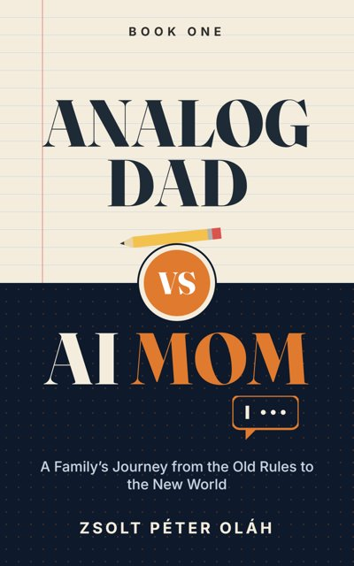

These are the worksheets from the end of each book, laid out for printing on US Letter paper. Print the pages you need, fill them out in pencil, and come back to them in a year to see what has changed. Nobody grades them.
No sign-up needed. Just open the file and print.

Book One
A Family’s Journey from the Old Rules to the New World · 15 pages
Download worksheets (PDF)